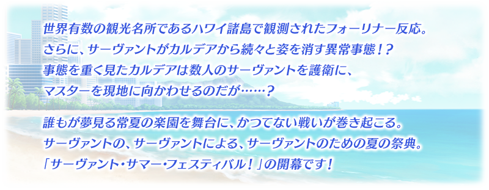
◆活動開始時間◆ 2018年8月9日(四) 17:00～8月29日(三) 11:59
◆活動概要◆
舉辦期間限定活動「從者夏日慶！(サーヴァント･サマー･フェスティバル！/Servant Summer Festival！)」！
這裡無論誰都是初次參加。協助Servant們以「從者★慶」的頂點為目標吧！
本活動中進行主線關卡的話，活動限定Servant「★4(SR)貞德〔Alter〕(Berserker)」將期間限定加入。
通過所有的主線關卡，讓「★4(SR)貞德〔Alter〕(Berserker)」正式加入吧！
※期間限定活動「從者夏日慶！」與2016年夏、2017年夏的活動不同，並非分成前後半的二部構成活動，而是奉上一部構成的大份量！
※關於真名尚未判明的Servant，透過主線記錄關卡的進行會讓Servant的名稱變化。
◆活動參加條件◆
只限通過「特異點F 炎上汙染都市 冬木」的Master才能參加

在Fate/Grand Order官方網站內首頁及Gallery，公開期間限定活動「從者夏日慶！」的電視廣告。敬請確認。
動畫製作：A-1 Pictures

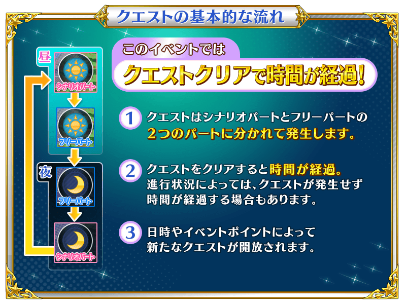
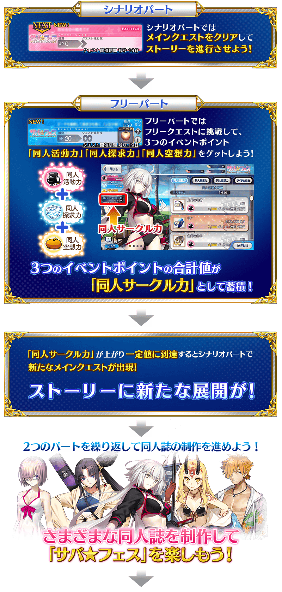

※通過在「從者夏日慶！」日後追加的關卡就能讓期間限定Servant「★4(SR)貞德〔Alter〕(Berserker)」的寶具等級提升。請注意活動開始初期的階段無法提升寶具等級。
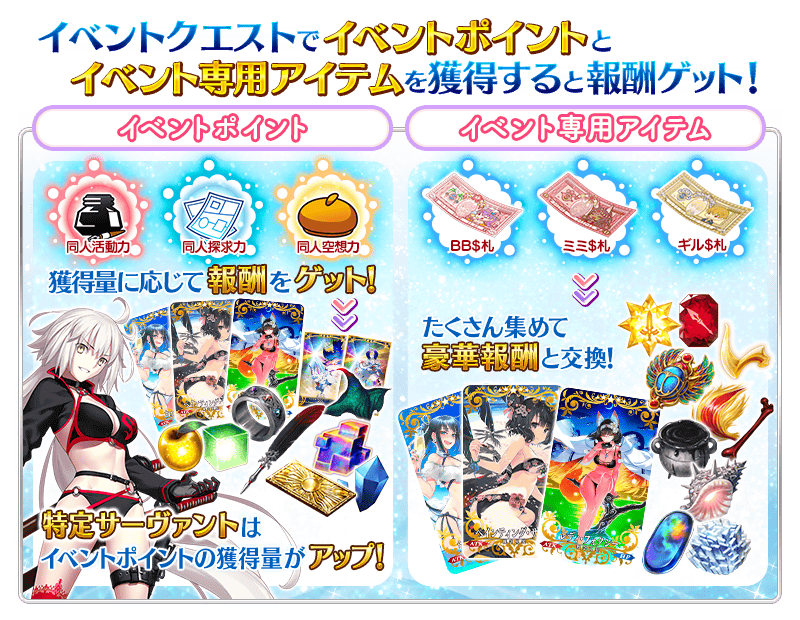
「同人活動力」「同人探求力」「同人空想力」的獲得量到達一定量的話，對應獲得量可獲得達成報酬。
達成報酬可在「同人活動力報酬」「同人探求力報酬」「同人空想力報酬」確認。
※「同人活動力」「同人探求力」「同人空想力」的獲得量只計算靠活動關卡掉落所獲得的「同人活動力」「同人探求力」「同人空想力」。
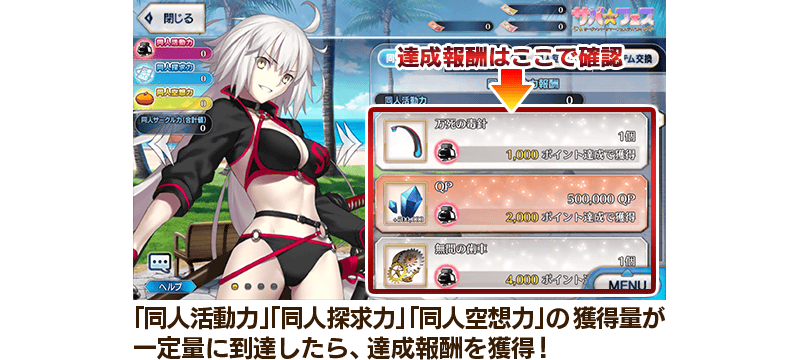
做為期間限定活動「從者夏日慶！」的關卡報酬，「★5(SSR)巖窟王 愛德蒙・唐泰斯」「★4(SR)吉爾伽美什(Caster)」「★3(R)羅賓漢」的靈衣開放權登場！
主線關卡的進行及累積3個各活動點數(同人活動力、同人探求力、同人空想力)的話會出現可獲得靈衣的關卡，通過該關卡的話可得到靈衣開放權！
另外，靈衣開放權報酬的關卡只可在「從者夏日慶！」舉辦期間中挑戰。
想開放新追加「★5(SSR)巖窟王 愛德蒙・唐泰斯」的靈衣「モンテ･クリストセレクション」「★4(SR)吉爾伽美什(Caster)」的靈衣「エスタブリッシュメント」「★3(R)羅賓漢」的靈衣「夏の狩人」的話，除了靈衣開放權外必須再加上一些開放條件。
請注意未持有各靈衣開放權的對象Servant的情況，還是能入手靈衣開放權，但無法進行靈衣開放。
關於詳情請在此處的頁面確認。


新3種的指令紋章做為期間限定活動「從者夏日慶！」關卡通過報酬登場！
將會出現可獲得含本活動限定的「ファーストサーヴァント」3種指令紋章的關卡。
另外，也會出現可獲得「Quick·Code·Opener」「Arts·Code·Opener」「Buster·Code·Opener」「Code·Remover」的關卡！
3種指令紋章與關聯道具做為報酬的關卡，累積3個各活動點數(同人活動力、同人探求力、同人空想力)就會出現，無論如何藉此機會得到吧！
◆關卡通過報酬指令紋章◆
 |
【活動限定】 |
 |
★★★★SR |
 |
★★★R |

期間限定活動「從者夏日慶！」限定的新魔術禮裝「トロピカルサマー」登場！
推進主線關卡的話，專為獲得魔術禮裝的關卡會在活動地圖內出現。
無論如何要得到期間限定的貴重魔術禮裝吧！


【8月16日(四) 22:00追記】
主線劇本後半中，會發生挑戰戰鬥好幾次來減少龐大HP的特殊形式戰鬥「Sacrilege Tetrahedron」。
在本戰鬥出現的敵人與普通的HP不同，持有單靠一次戰鬥無法全減的龐大「Total HP」，在給予傷害時同時減少普通HP與「Total HP」。
只要「普通的HP變為0」「限制回合數的経過」「在戰鬥敗北」任一戰鬥就會結束，最終將「Total HP」變為0擊倒敵人。
減少的「Total HP」會繼承到下個戰鬥，反覆挑戰敵人就能使之減少。
設法編組隊伍和裝備等在限制回合內給予大傷害，以厲害敵人的撃破為目標吧！
※從關卡撤退時給予的傷害變為無效，不會減少「Total HP」。
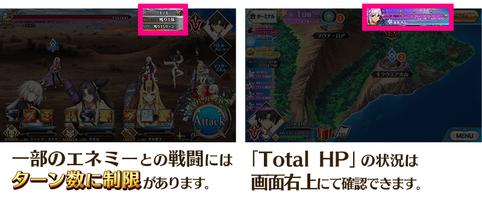

◆超值攻略方法・其1◆
對象Servant在期間限定活動「從者夏日慶！」的活動關卡中，會提升提升同人活動力、同人探求力、同人空想力的獲得量。
自期間限定活動「從者夏日慶！」新登場Servant會比其他對象Servant更多3個各活動點數(同人活動力、同人探求力、同人空想力)的獲得量。
※各Servant的增加量有所差異。
※請注意各關卡的道具掉落率並非100％。
【對象Servant(獲得量提升・大)】
| 職階 | 稀有度 | Servant名 |
|---|---|---|
| Archer | ★★★★★ | 貞德 |
| Berserker | ★★★★ | 貞德〔Alter〕 |
| MoonCancer | ★★★★★ | BB |
※8/16(四) 22:00修正
【對象Servant(獲得量提升・中)】
| 職階 | 稀有度 | Servant名 |
|---|---|---|
| Saber | ★★★★ | 女王梅芙 |
| Archer | ★★★ | 羅賓漢 |
| Lancer | ★★★★ | 茨木童子 |
| Caster | ★★★★ | 吉爾伽美什 |
| Assassin | ★★★★ | 牛若丸 |
| Avenger | ★★★★★ | 巖窟王 愛德蒙・唐泰斯 |
| Foreigner | ★★★★ | 謎之女主角XX |
| Shielder | ★★★ | 瑪琇・基利艾拉特 |
※8/16(四) 22:00修正
【對象Servant(獲得量提升・小)】
| 職階 | 稀有度 | Servant名 |
|---|---|---|
| Saber | ★★★★ | 弗蘭肯斯坦 |
| Archer | ★★★★★ | 阿爾托莉亞・潘德拉剛 |
| ★★★★ | 安妮・伯妮＆瑪莉・瑞德 | |
| ★★★★ | 海倫娜・布拉瓦茨基 | |
| Lancer | ★★★★★ | 玉藻前 |
| ★★★★ | 清姬 | |
| ★★★★ | 源賴光 | |
| Rider | ★★★★★ | 阿爾托莉亞・潘德拉剛〔Alter〕 |
| ★★★★ | 伊絲塔 | |
| ★★★★ | 莫德雷德 | |
| Caster | ★★★★★ | 尼祿・克勞狄烏斯 |
| ★★★★ | 瑪莉・安東尼 | |
| Assassin | ★★★★ | 斯卡哈 |
| ★★★★ | 尼托克里絲 | |
| Berserker | ★★★★ | 織田信長 |
| Ruler | ★★★★ | 瑪爾大 |
◆超值攻略方法・其2◆
裝備可在活動道具交換入手的活動限定概念禮裝「ウォーター・シャイン」「ペインティング・サマー」「レディ・フォクシー」，在期間限定活動「從者夏日慶！」中，會提升同人活動力、同人探求力、同人空想力的獲得量。
※請注意各關卡的道具掉落率並非100％。
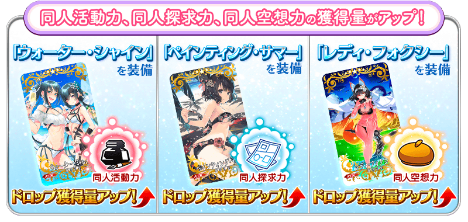
◆超值攻略方法・其3◆
裝備在聖晶石召喚Pick Up的期間限定概念禮裝「エメラルド・フロート」「疾風怒濤」「オールナイト・フィーバー」「ヒーロー・オン・ザ・ビーチ」「サンセット・ジャム」「ライティング・ハイ」，在期間限定活動「從者夏日慶！」中活動専用道具「BB$鈔」「耳朵$鈔」「吉爾$鈔」會提升各自的掉落獲得數。
※請注意各關卡的道具掉落率並非100％。
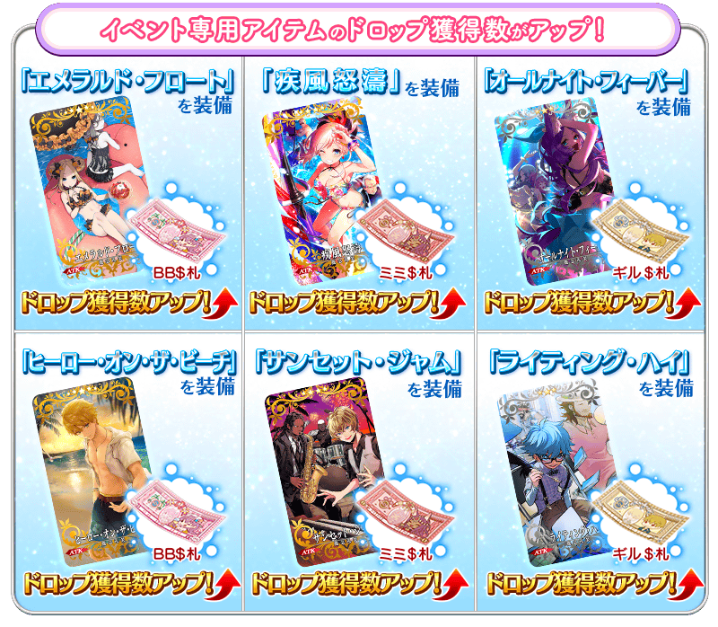

| 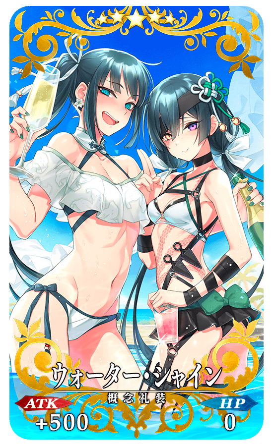 |
★★★★★SSR |
| 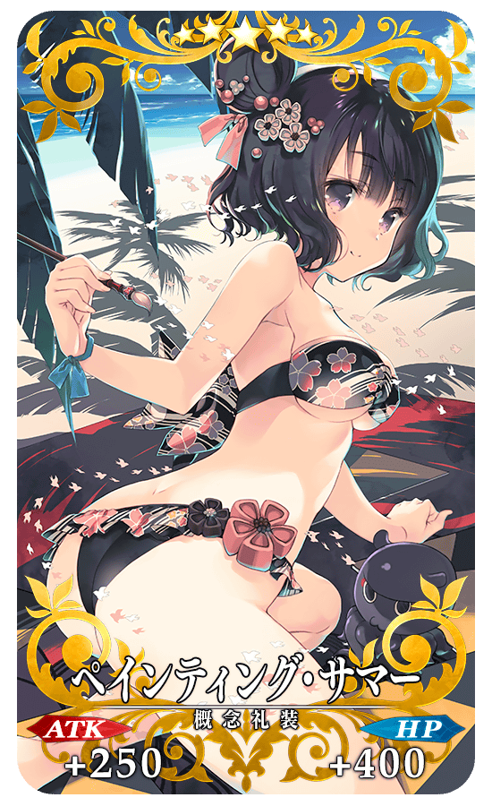 |
★★★★★SSR |
| 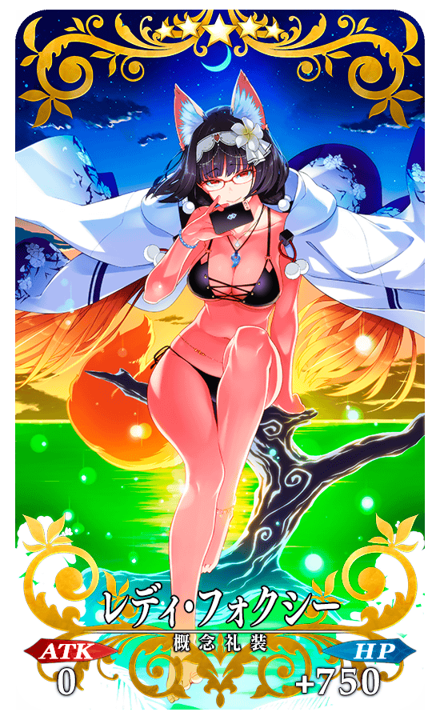 |
★★★★★SSR |

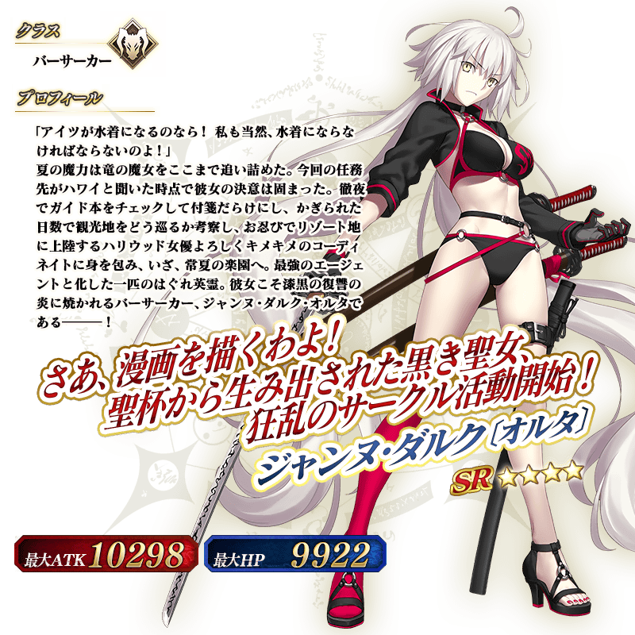
◆靈基再臨◆
使用活動期間中靠「活動道具交換」和「活動點數報酬」入手的「漆黑羽毛筆」，重複4次靈基再臨的話，卡面會有所變化！
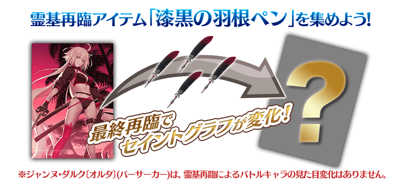
介紹貞德〔Alter〕(Berserker)的寶具演出！
在「Fate/Grand Order」官方網站內的公告中，公開了「★4(SR)貞德〔Alter〕(Berserker)」的寶具演出。敬請確認。
◆交換方法◆
交換期間:2018年8月9日(四) 17:00～9月5日(三) 11:59
※8/9(四) 17:00修正
※交換期間結束後「BB$鈔」「耳朵$鈔」「吉爾$鈔」會消失。
活動専用道具可自點擊管理室(ターミナル)畫面右上「活動報酬」的「活動道具交換」畫面，交換以下的道具。
◆能用BB$鈔交換的道具◆
|
【活動限定概念禮裝】
【活動限定靈基再臨素材】 【技能強化＆靈基再臨素材】 【技能強化素材】 【其他道具】 |
◆能用耳朵$鈔交換的道具◆
 |
【活動限定概念禮裝】 【技能強化＆靈基再臨素材】 【技能強化素材】 【其他道具】 |
◆能用吉爾$鈔交換的道具◆
| 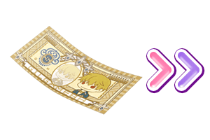 |
【活動限定概念禮裝】 【技能強化＆靈基再臨素材】 【技能強化素材】 【其他道具】 |
【8月16日(四) 22:00追記】
以通過期間限定活動「從者夏日慶！」特定主線關卡及「終局特異點」的Master為對象開放高難易度的「挑戰關卡」。
「挑戰關卡」就算通過後也不會消失，能無數次挑戰，可以變更Servant和概念禮裝的組合後再次挑戰。
※關卡通過報酬、戰利品、Master經驗值、魔術禮裝經驗值、絆點數只可在初次通過時獲得。
◆挑戰關卡參加條件◆
只限通過期間限定活動「從者夏日慶！」特定主線關卡及「終局特異點」的Master才能參加
◆挑戰關卡初次通過報酬◆
傳承結晶 1個
其他還有，期間限定「從者★慶Pick Up1召喚(每日交替)」和期間限定「從者★慶Pick Up2召喚」、期間限定「從者★慶Pick Up3召喚」同時舉辦！
關於詳情，請自下述橫幅確認。